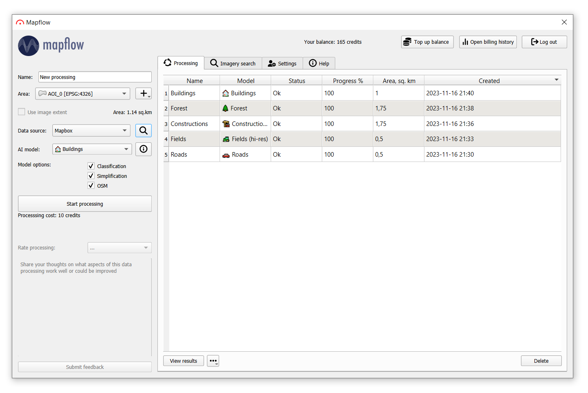
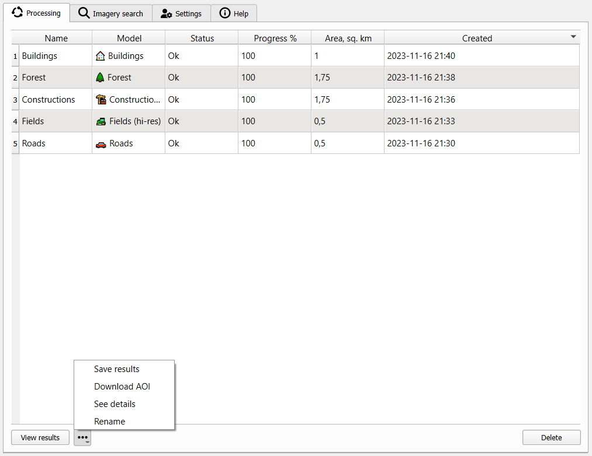
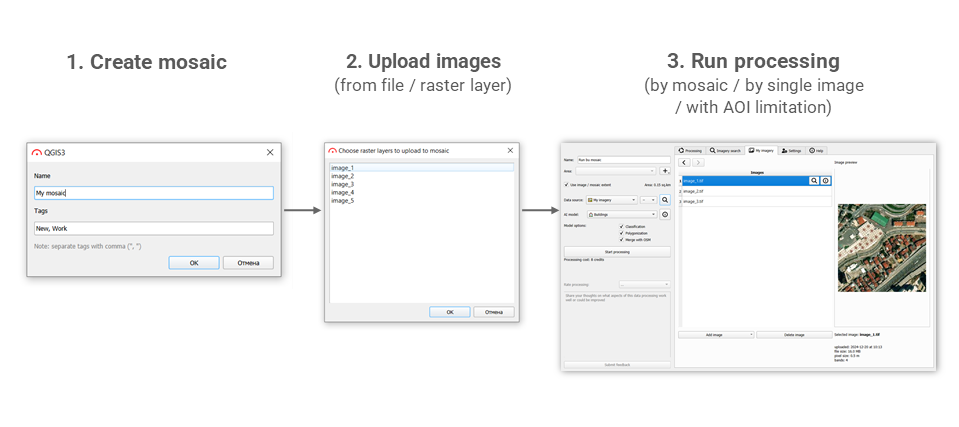
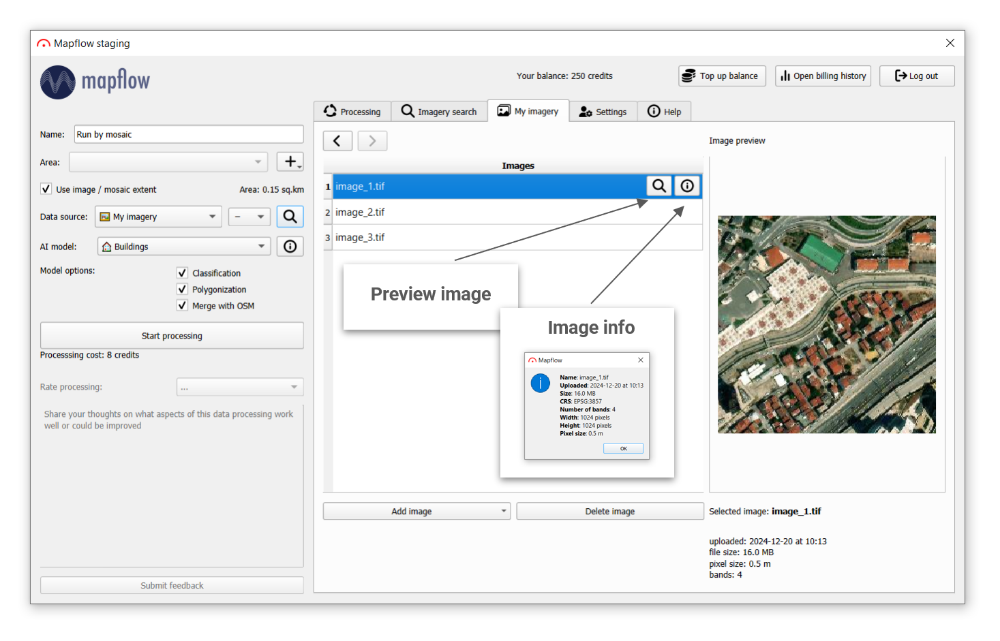
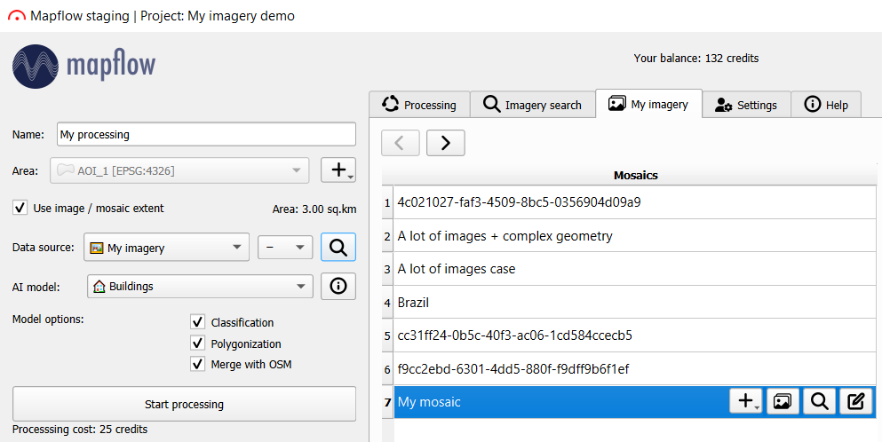
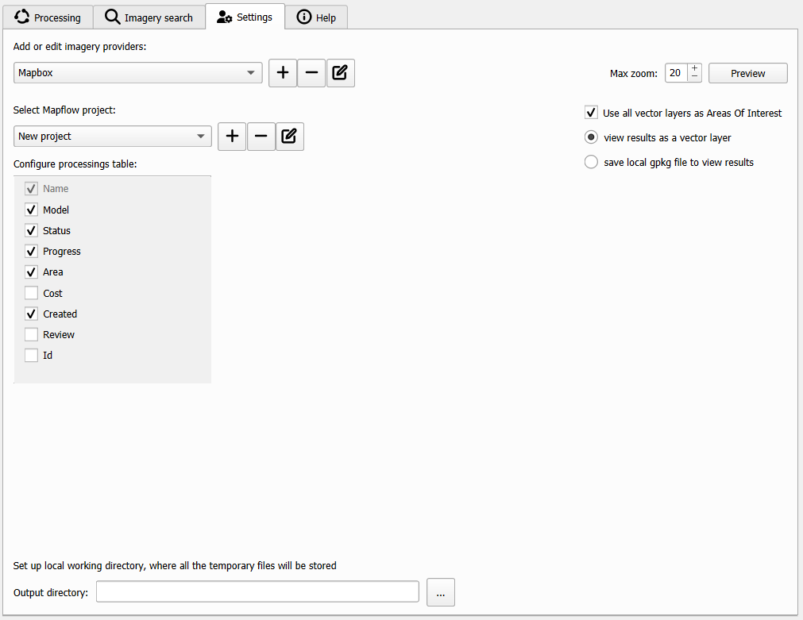
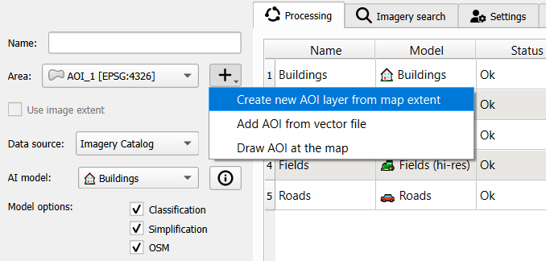

Распознавание объектов на снимках
1 Модуль от Mapflow AI
Mapflow от компании GeoAlert - платформа для распознавания объектов на спутниковых снимках.
Сайт платформы - https://mapflow.ai/ru
На платформе реализованы модели сегментации, позволяющие распознавать на снимках:
контура фундаментов зданий;
различные типы лесной растительности;
строительные площадки;
дороги;
сельскохозяйственные поля.
Подробная документация по работе с модулем приведена по ссылке.
После регистрации на платформе вы можете использовать ее напрямую в браузере или с помощью одноименного модуля для QGIS.
Регистрация на платформе является обязательным условием использования сервиса, даже при работе через модуль.

После установки значок модуля должен появиться в основной панели инструментов  .
.
При первом запуске модуля вы увидите окно, в котором необходимо ввести ваш личный API токен для доступа к сервису.

Сервис не работает через прокси.
Основное окно плагина содержит две основных панели:
панель процессинга;
вкладки с прочими настройками и источниками.

Панель процессинга позволяет настроить обработку изображений.
| Name of the field / button | Description | Описание |
|---|---|---|
| Processing name | Name of your processing | Пользовательское название процесса |
| Area | The area to be processed. This layer is automatically displayed in the drop-down list from the list of QGIS vector layers. | Область для обработки |
| Data source | Base imagery to be processed. By default Mapbox is selected, in the drop-down list you can also select satellite images of the commercial providers. You can open your image through the additional options button. | Источник данных для обработки. По умолчанию используется Mapbox, но доступен выбор других коммерческих провайдеров, а также вы можете открыть собственное изображение. |
| Show preview | A preview of your data source or, if it is not available, an OpenStreetMap basemap | Превью источника данных, при его отсутствии OpenStreetMap |
| Use image extent | This area becomes active if processing is performed on the .tif file. Allows you not to create an additional vector layer processing area for this image but takes its extent. | Использовать охват изображения. Становится активным только при использовании .tif. Позволяет не создавать отдельный слой для задания области обработки, а просто использовать охват изображения. |
| Processing area | Automatic calculation of the area of the selected processing area. | Область обработки |
| AI Model | Processing type. In the drop-down list, you can select the following processing types (default list of processing scenarios): Building Detection, Roads Detection, Forest Detection, Forest Detection With Heights, Construction Detection, Fields Detection. | Тип используемой модели. Список моделей по умолчанию:
|
| Your balance | Remaining area available for processing | Оставшееся количество кредитов для процессинга |
| Start processing | New processing start button. You will see a notification about the successful start of processing, or about incorrectly selected parameters after clicking it. It will appear in the block for displaying and working with processing after a successful start of processing. | Кнопка старта обработки |
| Stars for rating | Rating scores for the finished processing | Рейтинг обработки |
| Feedback field | Comments about rating | Комментарии |
Сервис является условно бесплатным, то есть при регистрации вы получаете 250 кредитов для обработки, после их использования можно пополнять свой баланс в личном кабинете.
Стоимость обработки рассчитывается по формуле1:
Стоимость = Площадь * (Стоимость обработки + Стоимость данных)
| Модель | Базовая цена | Пост-процессинг |
|---|---|---|
| Здания | 5 | Классификация: 0 Симплификация: 3 Высоты зданий: 20 Склейка с OpenSteeetMap: 0 |
| Здания (Аэрофото) | 25 | Симплификация: 3 |
| Строительство | 4 | - |
| Лес | 8 | Классификация по Высотам: 20 |
| Дороги | 5 | - |
При использовании поставщиков данных по умолчанию (Mapbox, Arcgis Satellite), собственного источника TMS или загруженных изображений цена равна нулю. Если вы используете коммерческих поставщиков («Global mosaic» и другие, которые могут быть доступны), стоимость данных зависит от уровня масштабирования. Мы сотрудничаем с поставщиками данных, а это означает, что стоимость услуги зависит от платного трафика, поэтому мы масштабируем цены в зависимости от разрешения изображения для более точной модели ценообразования.
| Поставщик данных | 18 zoom | 17 zoom | 16 zoom |
|---|---|---|---|
| Mapbox | 0 | 0 | 0 |
| ArcGIS WorldView | 0 | 0 | 0 |
| Ваш источник | 0 | 0 | 0 |
| Ваше изображение TIFF | 0 | 0 | 0 |
| Global mosaic | 10 | 2.5 | 1 |
Пример расчета стоимости обработки
Я хочу обработать 3.3 кв.км данных Global Mosaic на 18 зуме использую модель Зданий
Стоимость = 3.3 * (10+5) = 50 кредитов
В правой части окна 5 основных вкладок:
- Processing (Обработка)

| Name of the field | Description | Описание |
|---|---|---|
| Name | Your processing name. | Имя обработки |
| Model | User-selected item from the list of available models. | Используемая модель |
| Status | Processing status: IN_PROGRESS, OK, FAILED. | Статус обработки |
| Progress | The percentage of completeness of the processing. | Процент завершенности |
| Area | The processing area (AOI). | Площадь области обработки |
| Created | The date-time of the processing creation. | Дата обработки |
| Name of the button | Description | Описание |
|---|---|---|
| View results | Shows the results of completed processing in QGIS layers. | Отображение результатов |
| Delete | Deletes selected processing/processings. | Удаление обработок |
| Save results | Saves processing results to GeoJSON file. | Сохранение результатов |
| Download AOI | Adds processing AOI to qgis as a layer, for further work or export. | Добавление области обработки как слой |
| See details | Shows information about processing (Name, Status, Model, Model options, Data provider). | Информация об обработке |
| Rename | Renames your processing. | Переименование |
- Imagery search (Поиск снимков)

- My imagery (Мои снимки)




- Settings

- Help
Для начала обработки изображений необходимо выбрать интересующуя вас область. Это можно сделать несколькими способами:
- создать новую область по охвату карты;
- добавить полигон из векторного файла;
- нарисовать область на карте;
- использовать охват снимка.

Далее следует найти подходящий снимок:
- переключиться на вкладку “Imagery Search”;
- установить параметры поиска, включая область, период времени, облачность и процент пересечения с областью исследования;
- выбрать мозаику (“Product type = Mosaic”), в окне появится изображение и край конкретного снимка.

После обработки вы увидите результат в месте пересечения снимка и области исследования.